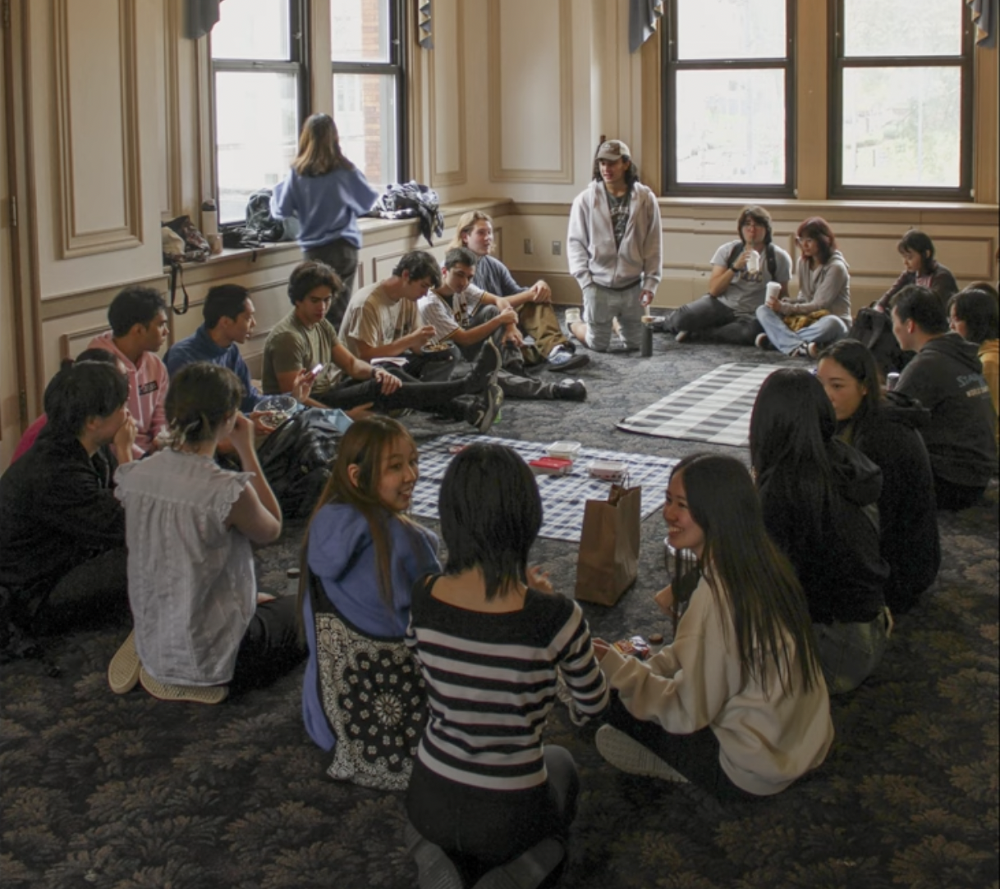
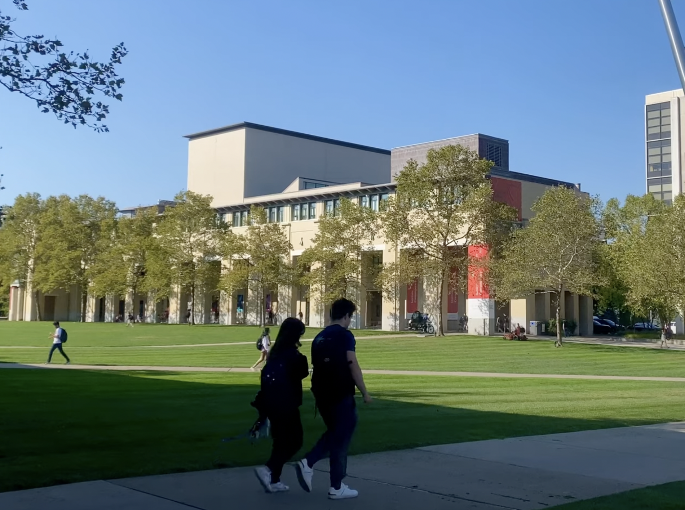
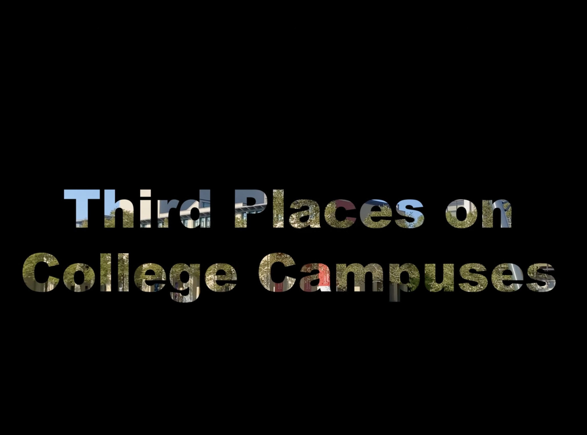
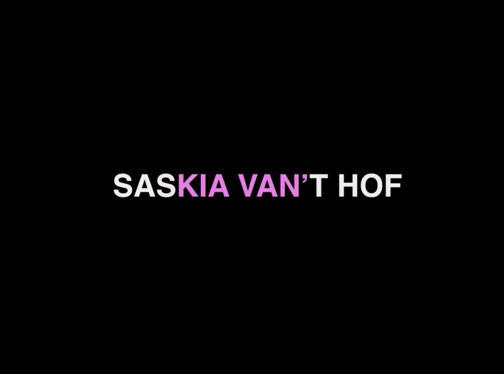
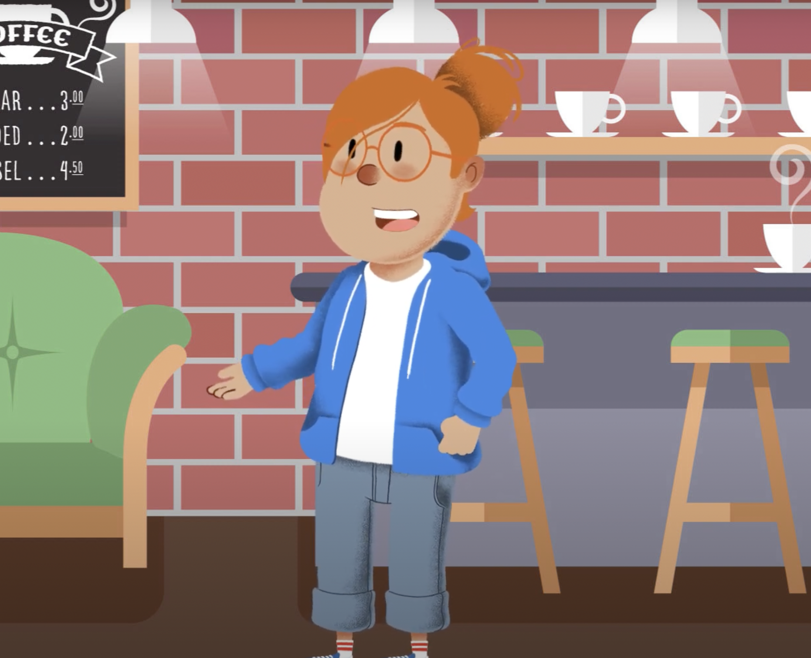

Phase 2/3: Expository Documentaries and Animation Effects
JSA Picnic: A Photo Essay

This photo project captures the Japanese Student Association enjoying time and a meal together during the club's annual watermelon and bento picnic.
Third Places on College Campuses (B-Roll)
The first portion of my "Third Places on College Campuses" series, this project is a culminatioin of some of the B-Roll I collected on the campuses of the University of Pittsburgh and Carnegie Mellon University.
Third Places on College Campuses (Short Documentary)

Adding interviews, narration, and more B-Roll, I expanded upon the previous B-Roll project and created a short documentary about "Third Places on College Campuses"
Third Places on College Campuses (with Fancy Title Card)

Builidng upon the short documentary about third places, I added some title effects using Adobe Premiere Pro.
Saskia Van't Hof: Experimenting with After Effects

My first time using After Effects, I created a short animation where pink color bounces from one side of my name to the other.
Examples of Third Places, Explained by Lucy

This project, using Adobe Character Animator, was an opportunity to take a portion of the narration I created for the short documentary and repurpose it with a talking avatar.
Phase 2/3 Course Goals
1. Foster the creative habits of mind
Brainstorming an idea that I could use as a sustained exploration of different production tools took a lot of creativity and patience. I wanted an idea to immediately come to me, but I had to workshop a few different ideas before I came up with thinking about “Third Places on College Campuses” for my video projects. Although the first project, “JSA Picnic: A Photo Essay”, may seem out of place next to the other works about third places, the photo essay is what originally sparked the idea about the types of spaces that facilitate casual social interaction for college students.
2. Engage with others in a workshop environment
I learned a lot from talking through my projects and my final project research with the students around me. Abby is the one who initially brought up the term “Third Places” in her photo essay project, and although it was a term I was familiar with I hadn’t really thought about exploring it until she talked about her angle on the subject during the workshop. I also think that getting feedback on the initial idea for my final project and on my early stages of research was very helpful, because I had a better sense of what concepts people connected with from the very beginning.
3. Think deeply about craft
Researching Third Places, both as a physical space in the context of college campuses in my short documentary and as a digital space in my final project research, allowed me to think deeply about my topic from many different angles. I was able to interview students from different universities, different social backgrounds, and different interests, who all had something uniquely different to say about the Third Places in which they socialize. In my own research, focusing on a slightly different topic with new source materials each week made me think deeply about which direction I wanted to take my craft.
4. Engage in sustained research and skills development.
I learned a lot of new editing skills working with different digital tools over the past six weeks. Using a different Adobe tool each week, including Photoshop, Premiere Pro, After Effects, and Character Animator, forced me to go beyond my comfort zone with editing and using different effects. Additionally, I learned a lot about the practices of creating abstracts and research methods by engaging in sustained research.
5. Learn to present your work
Throughout these past six weeks, I have led a lot of small group discussions at my table where we talk about our projects and our research. While there has been less opportunity to present our videos publicly in front of the class, I have shared my ideas for research with my classmates and with my professor, and learned how to better approach follow up questions about my work. I believe that verbal presentation through clear communication can be just as effective as physical presentation of material, so working on how to articulate my ideas has been very important.

generated by Pitt Fuego
“Why make a spark when you can light a fire?